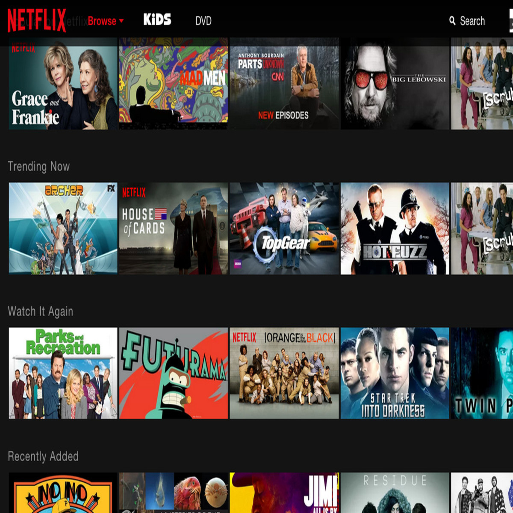

Software Development Engineer II
BackendDistributed SystemsPayments
I build scalable, reliable, and high-throughput backend systems that operate at real-world scale.
Currently @ barq, building payment infrastructure serving 10M+ customers and SAR 150B+ in transactions.
I'm a Software Development Engineer II focused on backend and distributed systems, with 4+ years of experience designing, building, and operating production systems in fintech.
My experience spans high-throughput payment systems, distributed backend services, event-driven architectures, bank integrations, settlement and reconciliation pipelines, and production-critical infrastructure. At barq, I've worked on systems supporting 10M+ customers, 940M+ transactions, and SAR 150B+ in transaction value, with a strong focus on scalability, reliability, performance, and operational excellence.
I enjoy solving engineering problems at the intersection of system design and implementation — turning requirements into well-structured services, designing APIs and data flows, making architectural trade-offs, and building systems that remain reliable as traffic, data, and complexity grow.
My core interests are High-Level Design, Low-Level Design, distributed systems, backend architecture, concurrency, event-driven systems, scalability, and reliability. I also enjoy going deep into the underlying technologies when it helps me make better engineering decisions.
I care about what happens when systems are under load, when dependencies fail, when concurrency gets complicated, and when seemingly small design decisions become production problems.
Years of Experience
Transactions Processed
Customers Served
Technologies, platforms, and engineering capabilities I use to design, build, and operate production systems.
CPI: 8.70 / 10
Score: 68.2%
GPA: 10 / 10
A collection of personal projects spanning distributed systems, AI infrastructure, networking, robotics, and machine learning.
A production-oriented, microservices-based AI platform combining multi-LLM orchestration, RAG, streaming, and distributed retrieval into a unified backend system.
A browser-based network traffic analysis tool for inspecting packet capture files without requiring desktop tools such as Wireshark.
A UAV fleet platform designed for autonomous search-and-rescue navigation in simulated urban environments.

A collaborative filtering-based recommendation system that personalizes movie recommendations using user and neighbourhood profiles.
Transactions Processed
Customers Served
Years of Experience
I'm open to conversations about backend engineering, distributed systems, interesting technical problems, and SDE II opportunities.
Backend · Distributed Systems · System Design · SDE II